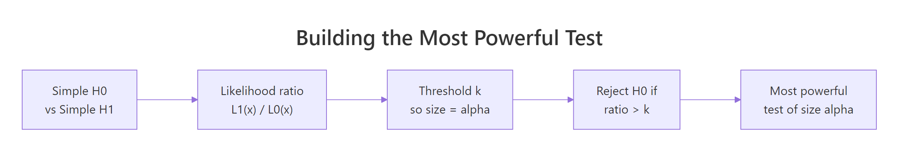
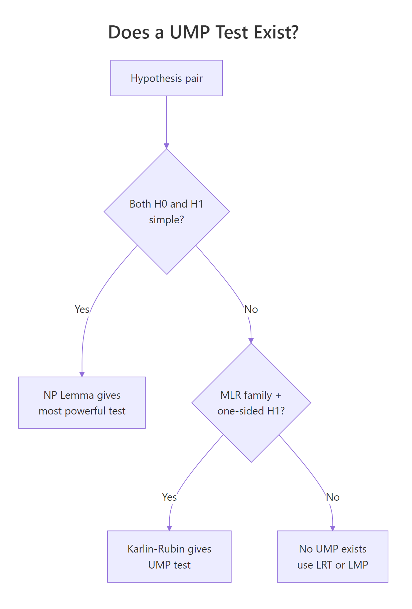

Neyman-Pearson Lemma in R: Most Powerful Tests & UMP Construction
The Neyman-Pearson Lemma says that when you test a simple null hypothesis against a simple alternative, the test that rejects when the likelihood ratio exceeds a fixed threshold is the most powerful test of any given size. This single result is the engine behind every classical hypothesis test you have ever run.
What does the Neyman-Pearson Lemma actually say?
Two competing models, one dataset, one decision. The lemma turns that decision into a recipe: compute the ratio of the two likelihoods at your data, compare it to a threshold, and reject the null if the ratio is large enough. We will run the recipe right now on a concrete normal-mean example so the abstraction has a face before we name it.
Suppose we observe a single sample of size 20 from a normal distribution with known variance 1. Two candidate models compete: $H_0: \mu = 0$ versus $H_1: \mu = 1$. We compute the likelihood under each, take their ratio, and let it tell us which model the data favours.
The ratio comes out about four million. Read that as: "the data are about four million times more likely under $H_1$ than under $H_0$." Whatever threshold we use, this sample blows past it and we reject $H_0$. The lemma's claim is that this exact rule, with the threshold tuned to a chosen Type I error rate $\alpha$, is the best possible rule of size $\alpha$. No other test, no matter how clever, can have higher power at this alternative.
The formal statement is short. Define the likelihood ratio
$$\Lambda(x) = \frac{L(\theta_1; x)}{L(\theta_0; x)}$$
Then the test that rejects $H_0$ when $\Lambda(x) > k$, with $k$ chosen so that $P(\Lambda(X) > k \mid H_0) = \alpha$, is the most powerful test of $H_0: \theta = \theta_0$ versus $H_1: \theta = \theta_1$ at level $\alpha$.
The same logic packs into a tiny helper.
Same answer, four lines of code. The helper accepts any two density functions, so the recipe works for Bernoulli, Poisson, exponential, or any other simple-versus-simple pair you can write a density for.

Figure 1: Building the most powerful test from a likelihood ratio in four steps.
Try it: Compute the likelihood ratio for the sample below under $H_0: \mu = 0$ vs $H_1: \mu = 2$ (variance 1 in both). Decide whether to reject at any reasonable threshold.
Click to reveal solution
Explanation: The data sit near 2 and far from 0, so the alternative likelihood ex_L1 dominates ex_L0. The ratio of about 1072 strongly favours rejecting $H_0$.
How do you build a most powerful test by hand in R?
Computing $\Lambda(x)$ for one sample is fine, but in practice we want a rule: given a sample size and a target Type I error $\alpha$, what is the rejection region? The trick is to rewrite the likelihood ratio in terms of a sufficient statistic, then pick a threshold on that statistic.
For $X_1, \ldots, X_n \sim N(\mu, 1)$ testing $H_0: \mu = 0$ vs $H_1: \mu = 1$, the log likelihood ratio simplifies to a linear function of the sample mean $\bar{X}$. Big $\bar{X}$ favours $H_1$, so the most powerful test rejects when $\bar{X} > c$ for some critical value $c$. We pick $c$ so that $P(\bar{X} > c \mid \mu = 0) = \alpha$.
The critical value sits at about 0.368. Any sample mean above that triggers a rejection. Twenty thousand simulated samples under $H_0$ produce a rejection rate of 5.09%, indistinguishable from the nominal 5%, confirming the test has the size we asked for.
Power is the probability of rejecting $H_0$ when $H_1$ is true. With the threshold fixed, computing power is a one-liner.
The test catches a true mean of 0.5 about 72% of the time and a true mean of 1.0 about 99.8% of the time. The lemma's promise: no other size-0.05 test using these 20 observations does better at either alternative.
Try it: Find the critical value for size $\alpha = 0.01$ on the same setup ($n = 20$, normal, variance 1).
Click to reveal solution
Explanation: A smaller $\alpha$ pushes the threshold higher (we need stronger evidence to reject), so 0.520 > 0.368.
How do size and power trade off in a most powerful test?
Power depends on three things: the threshold $c$ (set by $\alpha$), the sample size $n$, and the true alternative $\mu_1$. With $\alpha$ and $n$ fixed, power is a function of $\mu_1$. Plotting that function shows the test's reach.
The curve sits at $\alpha$ when $\mu_1 = 0$ (no signal, only Type I error), rises through 0.5 a little above zero, and saturates near 1 as $\mu_1$ grows. The red dashed line marks the size, the grey line marks the null. The shape is the classical S-curve every power analysis tool draws, and the lemma certifies it as the upper envelope across all level-0.05 tests for this problem.
Try it: Compare empirical power at $n = 50$ versus $n = 100$ for $\mu_1 = 0.3$ (using the appropriately rescaled critical value at $\alpha = 0.05$).
Click to reveal solution
Explanation: Doubling the sample size shrinks the standard error by $\sqrt{2}$, which lifts power from about 0.62 to about 0.85 at the same effect size and significance level.
What is a UMP test, and why is the lemma not enough?
The lemma assumes both hypotheses are simple, that is, each fixes a single parameter value. Real problems almost never look like that. We test $H_0: \mu = 0$ versus $H_1: \mu > 0$, and the alternative is a whole interval, not a point.
A test is uniformly most powerful (UMP) at level $\alpha$ if, for every parameter value in the alternative, it has at least as much power as any other level-$\alpha$ test. "Uniformly" means one fixed test wins across the whole alternative region.
The good news: in our normal-mean example, the rejection region "reject if $\bar{X} > c$" does not depend on the specific $\mu_1$ we plug into the lemma. Whether the lemma's $\mu_1$ is 0.5 or 2, the same threshold pops out. That single test is therefore the most powerful test against every simple alternative $\mu_1 > 0$, which is exactly what UMP requires.
The two rejection regions are not just close, they are exactly equal. That equality is the entire reason a UMP test exists for this problem.

Figure 2: Decision tree for when a UMP test exists, and what to do when it does not.
Try it: For the same setup, write code that prints the threshold the NP recipe gives for $\mu_1 = 0.5$ and for $\mu_1 = 2.0$, and verify they match.
Click to reveal solution
Explanation: The threshold under $H_0$ depends only on $\alpha$, $n$, and the null standard deviation. Nothing about $\mu_1$ enters, so the same number serves every alternative.
How does Karlin-Rubin extend NP to UMP for one-sided tests?
The trick we just used for normal means is not a coincidence. It works for any family with a structural property called the monotone likelihood ratio (MLR).
A family $\{f(x; \theta)\}$ has MLR in a statistic $T(x)$ if, for every $\theta_2 > \theta_1$, the ratio
$$\frac{f(x; \theta_2)}{f(x; \theta_1)}$$
is a non-decreasing function of $T(x)$. When that holds, large values of $T$ mean larger likelihoods under larger $\theta$, so a test that rejects for large $T$ is "the right direction" against any one-sided alternative.
The Karlin-Rubin theorem turns that observation into a guarantee: for an MLR family with sufficient statistic $T$, the test "reject $H_0: \theta \le \theta_0$ if $T > c$" is UMP for $H_1: \theta > \theta_0$ at level $\alpha = P(T > c \mid \theta_0)$. The symmetric version with "$T < c$" works for $H_1: \theta < \theta_0$.
Many standard families have MLR: normal mean (variance fixed), normal variance (mean fixed), exponential rate, Bernoulli/binomial $p$, Poisson rate, uniform on $(0, \theta)$. Let's build the UMP test for an exponential rate.
Under exponential with rate $\lambda$, the sample mean $\bar{X}$ has a scaled gamma distribution. Larger $\lambda$ produces smaller expected $\bar{X}$, so the rejection region for $H_1: \lambda > 1$ is "small $\bar{X}$." Karlin-Rubin certifies this rule as UMP. With a true $\lambda = 1.5$, the sample mean lands below the threshold and we correctly reject $H_0$.
The simulated size is 0.0501 (essentially nominal) and power at $\lambda = 1.5$ is about 0.59. To gain more power, you raise $n$ or move the alternative further from 1. The lemma plus Karlin-Rubin together promise no other size-0.05 test using these 30 observations beats this rejection rate.
Try it: Of the three families below, which have MLR in $T(X) = \sum X_i$?
Click to reveal solution
Explanation: Bernoulli (an exponential family) and Poisson (also exponential family) both have MLR in $\sum X_i$. Cauchy is heavy-tailed and not in the exponential family, and the likelihood ratio $f(x; \theta_2) / f(x; \theta_1)$ is not monotone in any sufficient statistic.
Why do two-sided tests usually have no UMP?
A two-sided alternative like $H_1: \mu \ne 0$ stretches the issue. Now we need a single test that beats every other test for $\mu_1 > 0$ and for $\mu_1 < 0$. The NP recipe gives different rejection regions for those two cases, so they conflict.
The "best" test against $\mu_1 = +1$ rejects when $\bar{X}$ is large. The "best" test against $\mu_1 = -1$ rejects when $\bar{X}$ is small. They share no common rejection region of size $\alpha$. So no single test of size 0.05 simultaneously dominates both halves of the alternative, and no UMP test for $H_1: \mu \ne 0$ exists.
The standard fix is the uniformly most powerful unbiased (UMPU) test, which adds an unbiasedness constraint (power at every alternative is at least $\alpha$). The familiar two-sided z-test "reject if $|\bar{X}|$ exceeds a critical value" is the UMPU solution for the normal mean.
Try it: Which of the alternatives below is two-sided?
Click to reveal solution
Explanation: Option (a) is one-sided (only positive $\mu$). Option (b) is simple (single value). Option (c) covers $\mu < 0$ and $\mu > 0$, the canonical two-sided form, which is exactly the case where no UMP test exists.
Practice Exercises
These three problems combine the ideas above. Use distinct variable names (my_*) so your work does not clobber tutorial state.
Exercise 1: UMP test for a Bernoulli proportion
You have $n = 50$ Bernoulli trials and want a size-0.05 UMP test for $H_0: p \le 0.3$ versus $H_1: p > 0.3$. Build the test (Bernoulli is an MLR family in $T = \sum X_i$, so Karlin-Rubin applies). Report the rejection threshold on $T$ and the power at $p = 0.5$.
Click to reveal solution
Explanation: Because $T$ is discrete, the achievable size at the integer threshold ($\approx 0.040$) sits below the nominal 0.05. Power at $p = 0.5$ is about 56%.
Exercise 2: Empirical size and power for an exponential UMP test
Given $n = 30$ exponential observations, build the UMP one-sided test for $H_0: \lambda \le 2$ vs $H_1: \lambda > 2$ at $\alpha = 0.05$. Simulate empirical size at $\lambda = 2$ and a small power curve at $\lambda \in \{2.2, 2.5, 3, 4\}$.
Click to reveal solution
Explanation: The empirical size matches the nominal 0.05 closely, and power climbs sharply as $\lambda$ moves away from 2. By $\lambda = 4$, the test is correct nearly 98% of the time.
Exercise 3: Verify no UMP exists for a two-sided normal mean
For $n = 25$ at $\alpha = 0.05$, compute the NP rejection region for $H_1: \mu = 0.6$ and for $H_1: \mu = -0.6$. Show numerically that neither region is contained in the other and that there is no single rejection set of size 0.05 with the same finite-sample power against both.
Click to reveal solution
Explanation: The two NP-optimal regions are mirror images. The "$+0.6$-optimal" rule has 91% power against $\mu = 0.6$; the "$-0.6$-optimal" rule has essentially zero power there. Neither rule dominates the other across the two-sided alternative, so no UMP can exist.
Putting It All Together: A Full UMP Pipeline for Bernoulli p
Imagine an A/B-style scenario. You want to know whether a new variant has a true conversion rate above 0.4. With a fixed budget of $n = 100$ trials and a 5% Type I error budget, build the entire UMP one-sided test, simulate empirical size, and trace the power curve.
The pipeline says: reject the null when 48 or more of the 100 trials succeed (the threshold is $T > 47$). The achieved size is 0.044 (slightly below nominal because of discreteness), the simulated rejection rate under $H_0$ matches at 0.045, and the test reaches 75% power once the true conversion is 0.525, climbing to 97% by $p = 0.6$. Karlin-Rubin tells us no other size-0.044 test on these 100 trials can match this power profile.
Summary
| Concept | One-line takeaway |
|---|---|
| Neyman-Pearson lemma | For simple H0 vs simple H1, the LR test with threshold tuned to $\alpha$ is most powerful. |
| Likelihood ratio $\Lambda(x)$ | $L_1(x) / L_0(x)$, the data's vote between two specific models. |
| Most powerful (MP) test | Highest power among all level-$\alpha$ tests at the given alternative. |
| Sufficient statistic | Lets you replace the full $\Lambda(x)$ with a one-dimensional rejection region. |
| Power | $P(\text{reject } H_0 \mid H_1)$; rises with $n$, with effect size, and with $\alpha$. |
| MLR family | Likelihood ratios are monotone in a single statistic; precondition for Karlin-Rubin. |
| Karlin-Rubin theorem | In MLR families, one-sided composite tests have a UMP. |
| UMP test | One test that is most powerful for every alternative parameter value. |
| Two-sided composite | Generally no UMP exists; use UMPU or the asymptotically optimal LRT. |
References
- Neyman, J. and Pearson, E. S. (1933). On the problem of the most efficient tests of statistical hypotheses. Philosophical Transactions of the Royal Society A, 231, 289-337. Link
- Casella, G. and Berger, R. L. (2002). Statistical Inference, 2nd ed. Duxbury. Chapter 8: Hypothesis Testing.
- Lehmann, E. L. and Romano, J. P. (2005). Testing Statistical Hypotheses, 3rd ed. Springer. Chapter 3: Uniformly Most Powerful Tests.
- Wasserman, L. (2004). All of Statistics. Springer. Chapter 10: Hypothesis Testing and p-values.
- Karlin, S. and Rubin, H. (1956). The theory of decision procedures for distributions with monotone likelihood ratio. Annals of Mathematical Statistics, 27(2), 272-299. Link
- Wikipedia. Neyman-Pearson lemma. Link
- R Core Team. The R stats package: Reference manual.
qnorm,pnorm,qbinom,pbinom,qchisq. Link
Continue Learning
- Maximum Likelihood Estimation in R, the estimation half of the likelihood story underlying every test on this page.
- Statistical Power and Sample Size in R, which turns the power-curve idea into pre-experiment sample-size planning.
- Likelihood Ratio Test in R, the composite-versus-composite generalisation that takes over when UMP fails.